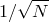

Most string manipulations are performed using the string substitution operator, %. This operator should be preceeded by a format string, such as x=%f, in which tokens such as %f mark places where numbers and strings should be substituted. The substitution operator is followed by a bracketed list of the quantities which should be substituted in place of these tokens in the format string. This behaviour is similar to that of the Python programming language’s % operator1 and of the printf statement in C. For example, to concatenate the two strings contained in the variables a and b into a single string variable c, one would issue the command:
c = "%s%s"%(a,b)
One application of this operator might be to label plots with the title of the datafile being plotted, as in the following example:
filename="data_file.dat"
title="A plot of the data in {\tt %s}."%(filename)
set title title
plot filename
The syntax of the substitution tokens placed in the format string is similar to that used by many other languages and is as follows. All substitution tokens begin with a % character, after which there may be placed, in order:
An optional minus sign, to specify that the substituted item should be left-justified.
An optional integer specifying the minimum character width of the substituted item, or a * (see below).
An optional decimal point/period (.) separator.
An optional integer, or a * (see below), specifying either (a) the maximum number of characters to be printed from a string, or (b) the number of decimal places of a floating-point number to be displayed, or (c) the minimum number of digits of an integer to be displayed, padded to the left with zeros.
A conversion character.
The conversion character is a single character which specifies what kind of substitution should take place. Its possible values are listed in Table 6.1. Note that where numerical quantities with physical units are provided, the physical units are not displayed unless the %s token is used. Although it is not an error to pass a quantity with physical units to, for example, the %f substitution token, it is good practice to divide the quantity by a suitable unit first to make it dimensionless, to be certain of the unit in which it will be displayed.
Character |
Substitutes |
d, i |
An integer value. |
e, E |
A floating-point value in scientific notation using either the character e or E to indicate exponentiation. |
f |
A floating-point value without the use of scientific notation. |
g, G |
A floating-point value, either using scientific notation, if the exponent is greater than the precision or less than , otherwise without the use of scientific notation. |
o |
An integer value in octal (base 8). |
s, S, c |
A string, if a string is provided, or a numerical quantity, with units, if such is provided. |
x, X |
An integer value in hexidecimal (base 16). |
% |
A literal % sign. |
Where the character * is specified for either the character width or the precision of the substitution token, an integer is read from the list of items to be substituted, as happens in C’s printf command:
pyxplot> print "%.*f"%(3,pi)
3.142
pyxplot> print "%.*f"%(6,pi)
3.141593
Footnotes